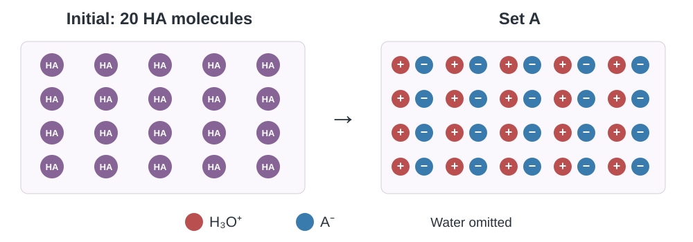
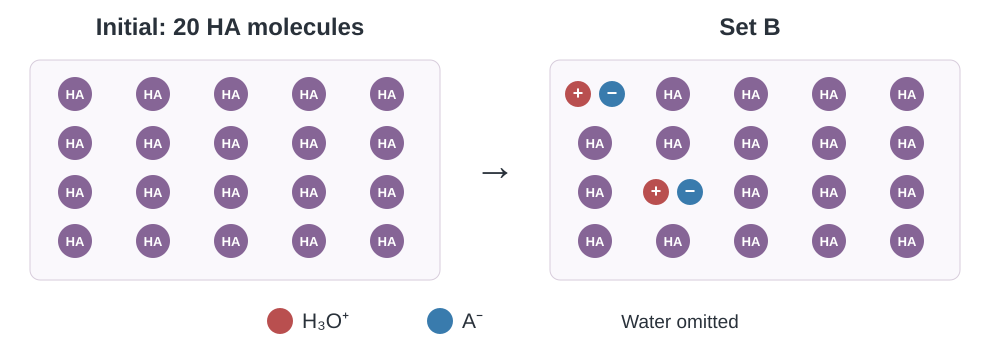
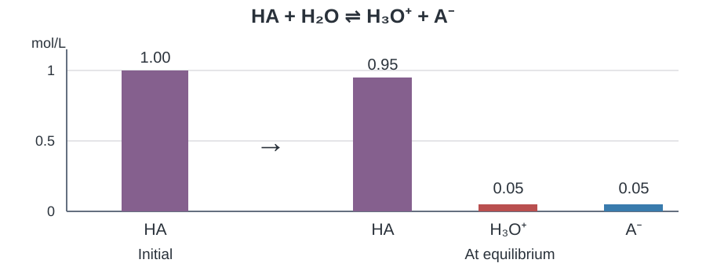
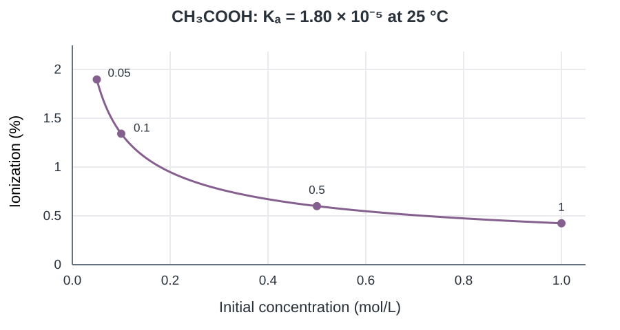

เคมี • เล่ม 4 • บทที่ 10 กรด–เบส
10.3 การแตกตัวของกรดอ่อนและเบสอ่อน
ใบที่ 2 จาก 3 · อ่านอนุภาค ตั้งสมดุล เลือกวิธีคำนวณ และเปรียบเทียบความแรง
สรุปสาระใต้หัวข้อ และแสดงวิธีคิดในพื้นที่ของแต่ละข้อ เปิดเฉลยเพื่อตรวจเหตุผล สมการ และหน่วย
1 แตกตัวบางส่วนหมายความว่าอย่างไร
ภาพใช้กรดสมมติและเริ่มจาก HA 20 โมเลกุลเท่ากัน น้ำไม่ได้แสดงในภาพ จำนวนอนุภาคเป็นแบบจำลองเพื่อฝึกนับ ไม่ใช่ค่าการวัดของกรดชนิดใด


คำถาม 1
คำถาม 2
กรดอ่อนและภาวะสมดุล
กรดอ่อนแตกตัวได้บางส่วน ที่สมดุลมีทั้ง HA และไอออน ผลิตภัณฑ์สามารถทำปฏิกิริยาย้อนกลับได้ ที่สมดุลอัตราไปข้างหน้าเท่ากับอัตราย้อนกลับ ไม่ได้หมายความว่าสารทุกชนิดมีความเข้มข้นเท่ากัน
ร้อยละการแตกตัว
สำหรับกรด HA ที่ให้โปรตอนหนึ่งตัว ในสารละลายที่ไม่มีไอออนจากแหล่งอื่น และละเลยการแตกตัวของน้ำได้ ให้ C เป็นความเข้มข้นเริ่มต้น และ x เป็นความเข้มข้นที่แตกตัว จะได้ \(\%\text{การแตกตัว}=\frac{x}{C}\times100\) ตัวส่วนเป็น C ไม่ใช่ C−x
คำถาม 3
ตัวอย่าง 4 (สสวท.) · ร้อยละจากความเข้มข้น
คำถาม 4
2 ตั้งความเข้มข้นก่อนแทนสูตร

คำถาม 5
ตารางเริ่มต้น–เปลี่ยนไป–สมดุล
| mol/L | HA | A- | H3O+ |
|---|---|---|---|
| เริ่มต้น | \(C\) | 0 | 0 |
| เปลี่ยนไป | \(-x\) | \(+x\) | \(+x\) |
| สมดุล | \(C-x\) | \(x\) | \(x\) |
C คือความเข้มข้นเริ่มต้นของ HA และ x คือส่วนที่แตกตัว ไม่ใช่ความเข้มข้นของ HA ที่เหลือ สมมติไม่มีไอออนผลิตภัณฑ์เริ่มต้นและละเลยส่วนจากน้ำ
คำถาม 6
| HA | H3O+ | A- |
|---|---|---|
| 0.098 mol/L | 0.002 mol/L | 0.002 mol/L |
HA เหลือ 0.100−0.002 ส่วนผลิตภัณฑ์แต่ละชนิดเพิ่ม 0.002 ตามอัตราส่วน 1 : 1 : 1
ค่าคงที่การแตกตัวของกรด \(K_a\)
ใช้ความเข้มข้นที่สมดุลทุกตัว น้ำเป็นตัวทำละลายจึงไม่ใส่ในนิพจน์นี้ ที่อุณหภูมิเดียวกัน ค่า \(K_a\) มากกว่าแสดงว่ากรดแรงกว่า ค่า \(K_a\) ของกรดชนิดเดิมไม่เปลี่ยนเพียงเพราะเจือจาง
คำถาม 7
ข้อมูล \(K_a\) ที่ 25 °C สำหรับใช้ทำโจทย์ ไม่ต้องท่องค่าตัวเลข
| กรด | \(K_a\) |
|---|---|
| HNO2 | \(5.62\times10^{-4}\) |
| HF | \(6.31\times10^{-4}\) |
| HCOOH | \(1.78\times10^{-4}\) |
| CH3COOH | \(1.80\times10^{-5}\) |
| C6H5COOH | \(5.75\times10^{-5}\) |
คำถาม 8
แบบฝึกหัด 10.3 · ข้อ 3
3 เมื่อใดจึงประมาณ \(C-x\approx C\) ได้
เงื่อนไขก่อนตัด \(x\)
สำหรับสมดุลรูป \(K=\frac{x^2}{C-x}\) ตามเงื่อนไขที่ตั้งไว้ ให้ตรวจ \(C/K\) ก่อน หนังสือใช้เกณฑ์ \(C/K>1000\) เพื่อเลือกใช้การประมาณ
ตัดเฉพาะ x ที่หักออกจาก C เพราะมีค่าน้อยเมื่อเทียบกับ C ส่วน x² ในเศษยังต้องคงอยู่ ใช้ \(K_a\) สำหรับกรด และ \(K_b\) สำหรับเบส ถ้าไม่ผ่านเกณฑ์ของหนังสือ ให้ใช้สมการเต็ม
คำถาม 9
คำถาม 10
คำถาม 11
ตัวอย่าง 5 (สสวท.) · ใช้การประมาณ
| mol/L | CH3COOH | CH3COO- | H3O+ |
|---|---|---|---|
| เริ่มต้น | \(0.50\) | 0 | 0 |
| เปลี่ยนไป | \(-x\) | \(+x\) | \(+x\) |
| สมดุล | \(0.50-x\) | \(x\) | \(x\) |
ตรวจ \(C/K_a=0.50/(1.80\times10^{-5})=2.78\times10^4>1000\)
ตรวจกลับ x/C×100 = 0.60% ซึ่งเล็กเมื่อเทียบกับ 100% ค่า H3O+ จึงประมาณ \(3.0\times10^{-3}\) mol/L; แก้สมการเต็มได้ \(2.991\times10^{-3}\) mol/L ซึ่งใกล้กัน
คำถาม 12
\(C/K_a=10^4>1000\) และ \(K_a=x^2/(0.10-x)\)
เป็นกรด HA ที่ให้โปรตอนหนึ่งตัว จึงมี H3O+ ≈ \(1.0\times10^{-3}\) mol/L
เมื่อใช้สมการเต็ม
ได้จากสูตรกำลังสองโดย a = 1, b = K, c = −KC เลือกรากที่ทำให้ 0 < x < C เพราะ x คือความเข้มข้นที่แตกตัว รากติดลบใช้ไม่ได้
ตรวจสอบความเข้าใจ · HA
\(C/K_a=100\) ไม่ผ่านเกณฑ์ >1000
รากบวก = \(9.51249\times10^{-5}\) และรากลบ = \(-1.051249\times10^{-4}\) mol/L เลือกรากบวก จึงได้ H3O+ = \(9.51\times10^{-5}\) mol/L
4 กรดที่ให้โปรตอนได้หลายขั้น
พิจารณาแต่ละขั้นแยกกัน
กรดที่ให้โปรตอนได้มากกว่าหนึ่งตัวมีค่าคงที่แยกแต่ละขั้น เช่น H2SO4
ขั้นแรกถือว่าสมบูรณ์ แต่ขั้นที่สอง \(K_{a2}=1.0\times10^{-2}\) จึงต้องพิจารณาสมดุล ห้ามใช้สูตร x²/(C−x) ของสารตั้งต้นเดี่ยวโดยไม่ตรวจไอออนที่มีอยู่แล้ว
ตรวจสอบความเข้าใจ · H2SO4
แบบฝึกหัด 10.3 · ข้อ 2
ขั้นแรกแตกตัวได้มากกว่าขั้นที่สองมาก ทั้งสองขั้นให้ H3O+ แต่ขั้นที่สองใช้ HSO3- ไปบางส่วน จึงได้
พิจารณาไอออนจากกรด; OH- จากน้ำมีน้อยมากในสารละลายกรดนี้
5 เบสอ่อนใช้วิธีเดียวกันอย่างไร
สมดุลของเบสอ่อนและ \(K_b\)
ถ้าเริ่มต้นมีเบส C mol/L และเกิดไอออนแต่ละชนิด x mol/L จะได้ \(K_b=x^2/(C-x)\) เช่นเดียวกับกรดอ่อน แต่ไอออนที่หาโดยตรงเป็น OH- ที่อุณหภูมิเดียวกัน เบสที่มี \(K_b\) มากกว่าจะแรงกว่า
คำถาม 13
คำถาม 14
ข้อมูล \(K_b\) ที่ 25 °C สำหรับใช้คำนวณ
| เบส | \(K_b\) |
|---|---|
| C2H5NH2 | \(4.47\times10^{-4}\) |
| CH3NH2 | \(4.57\times10^{-4}\) |
| NH3 | \(1.80\times10^{-5}\) |
| C6H5NH2 | \(7.41\times10^{-10}\) |
ตัวอย่าง 6 (สสวท.) · แอมโมเนีย
| mol/L | NH3 | NH4+ | OH- |
|---|---|---|---|
| เริ่มต้น | \(0.20\) | 0 | 0 |
| เปลี่ยนไป | \(-x\) | \(+x\) | \(+x\) |
| สมดุล | \(0.20-x\) | \(x\) | \(x\) |
\(C/K_b=0.20/(1.80\times10^{-5})=1.11\times10^4>1000\)
แบบฝึกหัด 10.3 · ข้อ 4
เริ่มต้น X- = 2.0 mol/L ไม่ใช่ 0 เพราะ NaX ให้ไอออนนี้ก่อน
\(C/K_b=2.0\times10^4>1000\)
ค่านี้คือความเข้มข้น OH- ที่สมดุล
แบบฝึกหัด 10.3 · ข้อ 5 เมทิลเอมีน CH3NH2 0.50 mol/L ใช้ \(K_b\) จากตาราง
แบบฝึกหัด 10.3 · ข้อ 5 ก
\(C/K_b=1.094\times10^3>1000\)
จึงได้ CH3NH3+ ≈ \(1.5\times10^{-2}\) mol/L
แบบฝึกหัด 10.3 · ข้อ 5 ข
6 กิจกรรม 10.1 ร้อยละการแตกตัวของกรดและเบส
ใช้ค่าคงที่ที่ 25 °C จากตาราง ทำเป็นกิจกรรมคำนวณและอ่านกราฟ ทุกความเข้มข้นมีพื้นที่คำนวณแยกกัน
ตอนที่ 1 คำนวณและเปรียบเทียบร้อยละการแตกตัวของเบสทั้งสามชนิดที่มีความเข้มข้นชนิดละ 0.50 mol/L
กิจกรรม 10.1 · ตอนที่ 1 · เอทิลเอมีน
ที่สมดุล เบสเหลือ 0.50−x และไอออนผลิตภัณฑ์แต่ละชนิดเท่ากับ x mol/L
\(C/K_b=1.12\times10^3>1000\)
กิจกรรม 10.1 · ตอนที่ 1 · แอมโมเนีย
ที่สมดุล เบสเหลือ 0.50−x และไอออนผลิตภัณฑ์แต่ละชนิดเท่ากับ x mol/L
\(C/K_b=2.78\times10^4>1000\)
กิจกรรม 10.1 · ตอนที่ 1 · ฟีนิลเอมีน
ที่สมดุล เบสเหลือ 0.50−x และไอออนผลิตภัณฑ์แต่ละชนิดเท่ากับ x mol/L
\(C/K_b=6.75\times10^8>1000\)
กิจกรรม 10.1 · ตอนที่ 1 · เปรียบเทียบ
ประมาณ 3.0%, 0.60% และ \(3.8\times10^{-3}\%\) ตามลำดับ
ตอนที่ 2 · ข้อ 1 กรดแอซีติก CH3COOH ชนิดเดิม แต่เปลี่ยนความเข้มข้น ใช้ \(K_a=1.80\times10^{-5}\)
กิจกรรม 10.1 · ตอนที่ 2 · 0.050 mol/L
\(C/K_a=2.78\times10^3>1000\)
กิจกรรม 10.1 · ตอนที่ 2 · 0.10 mol/L
\(C/K_a=5.56\times10^3>1000\)
กิจกรรม 10.1 · ตอนที่ 2 · 0.50 mol/L
\(C/K_a=2.78\times10^4>1000\)
กิจกรรม 10.1 · ตอนที่ 2 · 1.0 mol/L
\(C/K_a=5.56\times10^4>1000\)
กิจกรรม 10.1 · ตอนที่ 2 · ข้อ 2

แกนนอน: ความเข้มข้นเริ่มต้น (mol/L) แกนตั้ง: ร้อยละการแตกตัว ความเข้มข้นเพิ่มขึ้น ร้อยละการแตกตัวลดลง ใช้กราฟนี้ประกอบการอธิบายได้โดยไม่ต้องวาดอุปกรณ์ใหม่
คำถามท้ายกิจกรรม 10.1 · ข้อ 1
คำถามท้ายกิจกรรม 10.1 · ข้อ 2
ความเข้มข้นไอออนกับร้อยละการแตกตัว
สำหรับกรดอ่อนชนิดเดิมที่ใช้การประมาณได้
เมื่อเจือจาง C ลดลง ความเข้มข้น H3O+ หรือ x ลดลง แต่สัดส่วน x/C เพิ่มขึ้น จึงแตกตัวเป็นร้อยละมากขึ้นได้ ห้ามสรุปว่าร้อยละเพิ่มแล้วความเข้มข้นไอออนต้องเพิ่ม
คำถาม 15
7 ย้อนกลับหาค่าคงที่และเปรียบเทียบ
ใช้ร้อยละหาค่าคงที่
เมื่อโจทย์ให้ร้อยละแล้ว ให้หา x ก่อน แล้วใช้ C−x จริงในตัวส่วนได้เลย ไม่จำเป็นต้องประมาณเป็น C หาค่า \(K_a\) หรือ \(K_b\) ตามชนิดสาร
แบบฝึกหัด 10.3 · ข้อ 7
เก็บตัวเลขระหว่างคำนวณไว้ก่อน แล้วปัดคำตอบสุดท้าย
ตรวจสอบความเข้าใจ · เปรียบเทียบ HA และ HB HA 0.20 mol/L แตกตัว 10% ส่วน HB 0.020 mol/L แตกตัว 20% ข้อสรุปว่า HB แรงกว่า HA ถูกหรือไม่? หาค่าต่อไปนี้ประกอบเหตุผล
ตรวจสอบความเข้าใจ · ก · HA
ตรวจสอบความเข้าใจ · ข · HB
ตรวจสอบความเข้าใจ · ค · ข้อสรุป
แบบฝึกหัด 10.3 · ข้อ 6 กรดเบนโซอิก C6H5COOH มี \(K_a=5.75\times10^{-5}\) คำนวณและเปรียบเทียบร้อยละการแตกตัวในสองสารละลาย
แบบฝึกหัด 10.3 · ข้อ 6 ก
\(C/K_a=4.35\times10^3>1000\)
แบบฝึกหัด 10.3 · ข้อ 6 ข
\(C/K_a=6.96\times10^3>1000\)
แบบฝึกหัด 10.3 · ข้อ 6 ค
Chemistry • Book 4 • Chapter 10 Acids and Bases
10.3 Weak Acids and Weak Bases
Sheet 2 of 3 · Read particles, set up equilibrium, choose a method and compare strength
Write the key ideas under each heading. Use the space under each question to show your reasoning, equations and units, then compare with the solution.
1 What does partial ionization mean?
Both schematics begin with 20 molecules of a model acid HA. Water is omitted. The particle counts are for learning, not measured values for a particular acid.
Question 1
Question 2
Weak acids and equilibrium
A weak acid ionizes partially, leaving both HA and ions at equilibrium. The reverse reaction also occurs. Forward and reverse rates are equal at equilibrium; the concentrations need not be equal.
Percent ionization
For a monoprotic acid HA, with no other source of these ions and negligible water ionization, let C be the initial concentration and x the concentration ionized. Then \(\%\text{ ionization}=\frac{x}{C}\times100\). The denominator is C, not C−x.
Question 3
Example 4 (IPST) · Percent from concentration
Question 4
2 Set up concentrations before using a formula
Question 5
Initial–change–equilibrium table
| mol/L | HA | A- | H3O+ |
|---|---|---|---|
| Initial | \(C\) | 0 | 0 |
| Change | \(-x\) | \(+x\) | \(+x\) |
| Equilibrium | \(C-x\) | \(x\) | \(x\) |
C is the initial HA concentration and x is the portion ionized, not the remaining HA concentration. Assume no initial product ions and negligible contributions from water.
Question 6
| HA | H3O+ | A- |
|---|---|---|
| 0.098 mol/L | 0.002 mol/L | 0.002 mol/L |
HA falls by 0.002 mol/L; each product rises by 0.002 mol/L because the ratio is 1 : 1 : 1.
Acid-ionization constant \(K_a\)
Use equilibrium concentrations throughout. Water is the solvent and is omitted. At the same temperature, a larger \(K_a\) means a stronger acid. Dilution alone does not change the acid’s \(K_a\).
Question 7
\(K_a\) values at 25 °C for the problems; the numerical values need not be memorized.
| Acid | \(K_a\) |
|---|---|
| HNO2 | \(5.62\times10^{-4}\) |
| HF | \(6.31\times10^{-4}\) |
| HCOOH | \(1.78\times10^{-4}\) |
| CH3COOH | \(1.80\times10^{-5}\) |
| C6H5COOH | \(5.75\times10^{-5}\) |
Question 8
IPST Exercise 10.3 · Q3
3 When can we approximate \(C-x\approx C\)?
Check the condition before neglecting \(x\)
For an equilibrium of the form \(K=\frac{x^2}{C-x}\) under the stated assumptions, check \(C/K\) first. The textbook uses \(C/K>1000\) as its approximation criterion.
Only neglect the x subtracted from C, because it is small compared with C. Retain x² in the numerator. Use \(K_a\) for an acid and \(K_b\) for a base. If the textbook criterion is not met, solve the full equation.
Question 9
Question 10
Question 11
Example 5 (IPST) · Using the approximation
| mol/L | CH3COOH | CH3COO- | H3O+ |
|---|---|---|---|
| Initial | \(0.50\) | 0 | 0 |
| Change | \(-x\) | \(+x\) | \(+x\) |
| Equilibrium | \(0.50-x\) | \(x\) | \(x\) |
Check \(C/K_a=0.50/(1.80\times10^{-5})=2.78\times10^4>1000\).
Checking x/C×100 gives 0.60%, small compared with 100%. The hydronium concentration is approximately \(3.0\times10^{-3}\) mol/L. The full equation gives \(2.991\times10^{-3}\) mol/L, a close result.
Question 12
\(C/K_a=10^4>1000\) and \(K_a=x^2/(0.10-x)\).
For monoprotic HA, this is the hydronium concentration.
Solving the full equation
Apply the quadratic formula with a = 1, b = K and c = −KC. Select the root with 0 < x < C because x is an ionized concentration. A negative root is invalid.
IPST understanding · HA
\(C/K_a=100\) fails the >1000 criterion.
The roots are \(9.51249\times10^{-5}\) and \(-1.051249\times10^{-4}\) mol/L. Select the positive root: hydronium is \(9.51\times10^{-5}\) mol/L.
4 Acids that ionize in steps
Consider each ionization step separately
Polyprotic acids have a separate constant for each step. For sulfuric acid:
The first step is essentially complete; the second has \(K_{a2}=1.0\times10^{-2}\) and requires equilibrium reasoning. Do not apply x²/(C−x) without checking ions already present.
IPST understanding · H2SO4
IPST Exercise 10.3 · Q2
The first step is much more extensive than the second. Both steps form hydronium, while the second consumes some hydrogen sulfite. Thus:
This compares the acid-derived ions; water supplies only a tiny hydroxide concentration in this acidic solution.
5 How does the method apply to weak bases?
Weak-base equilibrium and \(K_b\)
Starting with C mol/L base and forming x mol/L of each product gives \(K_b=x^2/(C-x)\). The method matches that for a weak acid, but directly finds hydroxide. At the same temperature, a larger \(K_b\) means a stronger base.
Question 13
Question 14
\(K_b\) values at 25 °C for the calculations.
| Base | \(K_b\) |
|---|---|
| C2H5NH2 | \(4.47\times10^{-4}\) |
| CH3NH2 | \(4.57\times10^{-4}\) |
| NH3 | \(1.80\times10^{-5}\) |
| C6H5NH2 | \(7.41\times10^{-10}\) |
Example 6 (IPST) · Ammonia
| mol/L | NH3 | NH4+ | OH- |
|---|---|---|---|
| Initial | \(0.20\) | 0 | 0 |
| Change | \(-x\) | \(+x\) | \(+x\) |
| Equilibrium | \(0.20-x\) | \(x\) | \(x\) |
\(C/K_b=0.20/(1.80\times10^{-5})=1.11\times10^4>1000\)
IPST Exercise 10.3 · Q4
Initially X− is 2.0 mol/L, not zero, because NaX supplies it first.
\(C/K_b=2.0\times10^4>1000\)
This is the equilibrium hydroxide concentration.
IPST Exercise 10.3 · Q5. Use the table for 0.50 mol/L methylamine, CH3NH2.
IPST Exercise 10.3 · Q5(a)
\(C/K_b=1.094\times10^3>1000\)
Thus methylammonium is approximately \(1.5\times10^{-2}\) mol/L.
IPST Exercise 10.3 · Q5(b)
6 Activity 10.1 Percent Ionization
Use the constants at 25 °C from the tables. This is a calculation and graph activity, with a separate working area for each concentration.
Part 1. Calculate and compare percent ionization for the three bases, each at 0.50 mol/L.
Activity 10.1 · Part 1 · Ethylamine
At equilibrium the base is 0.50−x and each product ion is x mol/L.
\(C/K_b=1.12\times10^3>1000\)
Activity 10.1 · Part 1 · Ammonia
At equilibrium the base is 0.50−x and each product ion is x mol/L.
\(C/K_b=2.78\times10^4>1000\)
Activity 10.1 · Part 1 · Phenylamine
At equilibrium the base is 0.50−x and each product ion is x mol/L.
\(C/K_b=6.75\times10^8>1000\)
Activity 10.1 · Part 1 · Compare
Approximately 3.0%, 0.60% and \(3.8\times10^{-3}\%\), respectively.
Part 2 · Q1. Use acetic acid at different concentrations, with \(K_a=1.80\times10^{-5}\).
Activity 10.1 · Part 2 · 0.050 mol/L
\(C/K_a=2.78\times10^3>1000\)
Activity 10.1 · Part 2 · 0.10 mol/L
\(C/K_a=5.56\times10^3>1000\)
Activity 10.1 · Part 2 · 0.50 mol/L
\(C/K_a=2.78\times10^4>1000\)
Activity 10.1 · Part 2 · 1.0 mol/L
\(C/K_a=5.56\times10^4>1000\)
Activity 10.1 · Part 2 · Q2
Horizontal axis: initial concentration in mol/L. Vertical axis: percent ionization. Percent ionization falls as initial concentration rises. The prepared graph can be used for discussion.
Activity 10.1 questions · Q1
Activity 10.1 questions · Q2
Ion concentration and percent ionization
For the same weak acid in the approximation regime:
On dilution, C falls and the hydronium concentration x falls, but the fraction x/C rises. A larger percent ionization does not mean a larger ion concentration.
Question 15
7 Work back to the constant and compare
Finding the constant from a percentage
When the percentage is known, first find x, then use the actual C−x in the denominator. There is no need to approximate it by C. Choose \(K_a\) or \(K_b\) for the substance.
IPST Exercise 10.3 · Q7
Retain intermediate digits and round the final result.
IPST understanding · Compare HA and HB. HA is 0.20 mol/L and 10% ionized; HB is 0.020 mol/L and 20% ionized. Is HB stronger? Find the following quantities to support your answer.
IPST understanding · (a) HA
IPST understanding · (b) HB
IPST understanding · (c) Conclusion
IPST Exercise 10.3 · Q6. Benzoic acid, C6H5COOH, has \(K_a=5.75\times10^{-5}\). Calculate and compare percent ionization in two solutions.
IPST Exercise 10.3 · Q6(a)
\(C/K_a=4.35\times10^3>1000\)
IPST Exercise 10.3 · Q6(b)
\(C/K_a=6.96\times10^3>1000\)
IPST Exercise 10.3 · Q6(c)